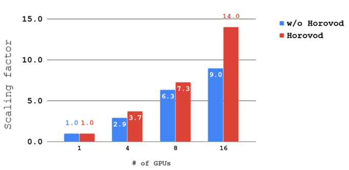

ConvS2S¶
Model¶
ConvS2S is a fully convolutional Neural Machine Translation model based on Facebook ConvS2S model (see Convolutional Sequence to Sequence Learning by Jonas Gehring etal ). Our implementation matches the original model. Common source and target vocabulary is used to share input/output embedding Tokenization of input and output is done with SentencePiece (SentencePiece) The BLEU score was done with SacreBLEU (A Call for Clarity in Reporting BLEU Scores)
Training¶
The baseline config (en-de-convs2s-8-gpu.py) achieves BLEU score of around 25 on WMT 2014 English-to-German translation task ( checkpoint ).
In order to train the model we use:
- Adam as the optimizer
- warmup LR with initial learning rate 1e-3
- batch size of 128 per GPU for mixed precision and batch 64/ GPU for float32
- dropout rate = 0.2
Mixed Precision¶
The following changes are done to the model for mixed precision training:
- Softmax normalization should be done in float32 for both attention and loss, so inputs have been converted from float16 to float
- Automatic loss scaling with back-off
- Learning rate warmpup
MP training is around 2.5X-2.7X times faster than float32 on one single GPU.
This model also shows very good multi-GPU scalability. Here are the scaling factors for batch 128/GPU:
